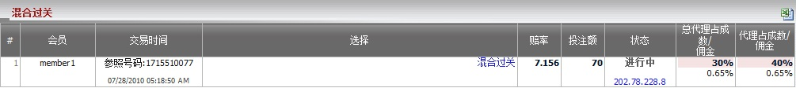
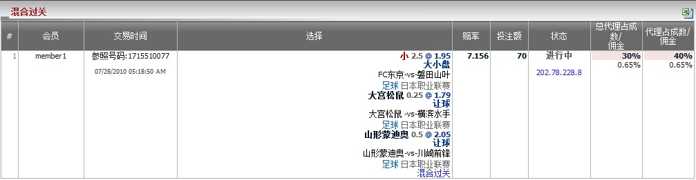

定义:
显示总代理, 代理基于注单占成数的输赢数额, 投注类型之: 混合过关。

对于混合过关投注类型, 您必须在一种运动类型或不同的运动类型混合至少三场赛事。要查看每个混合过关投注的细节, 只需点击选择列的 "混合过关"。

| 类型 | 最低投注 | 最高投注 | 您的占成数 |
| 足球混合过关 | 50 | 100 | 30% |
| 混合体育过关 | 40 | 80 | 20% |
注单1: 会员投注于足球, 篮球及网球 --> 最低投注 = 40, 最高投注 = 80, 占成数 = 20%
注单2: 会员只投注于篮球 --> 最低投注 = 40, 最高投注 = 80, 占成数 = 20%
注单3: 会员只投注于足球 --> 最低投注 = 50, 最高投注 = 100, 占成数 = 30%